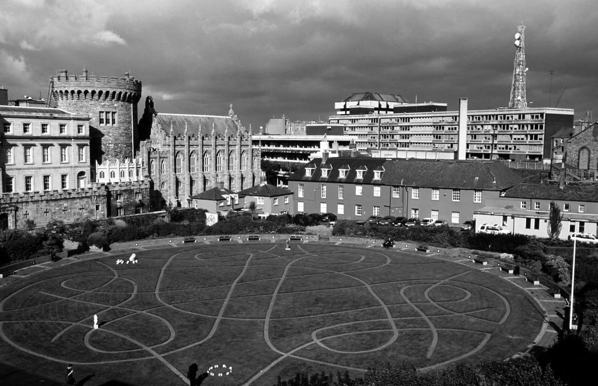
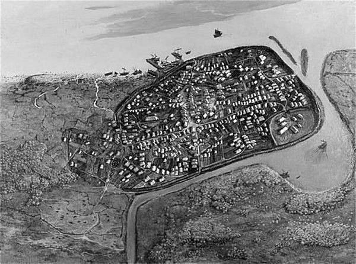
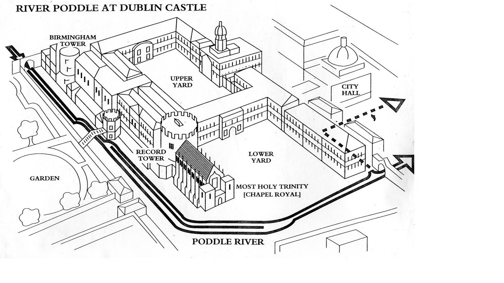

Stop 14 of 16 · Dublin Castle gardens
Dubh Linn
The black pool that gave the city its name.
Origin
The Dubh Linn, the black pool, was a pool on the Poddle just before it met the Liffey.
The tidal, salty Liffey was no good for drinking, so the fresh water of the Poddle was the main drinking supply for the settlement that became Dublin.
The pool may have been darkened by peat carried down from the hills. The Vikings who settled beside it called their town Dyfflin, from the Irish dubh linn. The pool itself lay under what are now the coach house and gardens of Dublin Castle.
Defence
As the city grew, the Poddle became a key defence on its southern side. The stream was channelled, and even dammed, to act as a moat. That dam is said to have given Dame Street, which now runs in front of Dublin Castle, its name.
Dubh Linn today
Behind Dublin Castle, the site of the Dubh Linn is kept as a garden, a monument to its importance and the Poddle’s. The Dubh Linn Garden is bordered by the Chester Beatty Library, Dublin Castle and the Poddle, which now runs underground along its southern edge.


